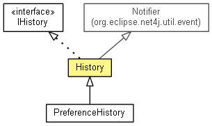

org.eclipse.net4j.util.collection
Class History<T>
java.lang.Object
 org.eclipse.net4j.util.event.Notifier
org.eclipse.net4j.util.collection.History<T>
org.eclipse.net4j.util.event.Notifier
org.eclipse.net4j.util.collection.History<T>
- All Implemented Interfaces:
- Iterable<IHistoryElement<T>>, IHistory<T>, INotifier
- Direct Known Subclasses:
- PreferenceHistory
- public class History<T>
- extends Notifier
- implements IHistory<T>

| Methods inherited from class org.eclipse.net4j.util.event.Notifier |
addListener, fireEvent, fireEvent, fireEvent, fireThrowable, firstListenerAdded, getListeners, getNotificationService, hasListeners, lastListenerRemoved, removeListener |
| Methods inherited from class java.lang.Object |
clone, equals, finalize, getClass, hashCode, notify, notifyAll, toString, wait, wait, wait |
elements
protected List<IHistoryElement<T>> elements
History
public History()
getElements
public List<IHistoryElement<T>> getElements()
setElements
public void setElements(List<IHistoryElement<T>> newElements)
isEmpty
public boolean isEmpty()
- Specified by:
isEmpty in interface IHistory<T>
size
public int size()
- Specified by:
size in interface IHistory<T>
indexOf
public int indexOf(T data)
- Specified by:
indexOf in interface IHistory<T>
get
public IHistoryElement<T> get(int index)
- Specified by:
get in interface IHistory<T>
add
public boolean add(T data)
- Specified by:
add in interface IHistory<T>
remove
public IHistoryElement<T> remove(int index)
- Specified by:
remove in interface IHistory<T>
clear
public boolean clear()
- Specified by:
clear in interface IHistory<T>
getMostRecent
public T getMostRecent()
- Specified by:
getMostRecent in interface IHistory<T>
getData
public <D> D[] getData(D[] a)
- Specified by:
getData in interface IHistory<T>
toArray
public IHistoryElement<T>[] toArray()
- Specified by:
toArray in interface IHistory<T>
iterator
public Iterator<IHistoryElement<T>> iterator()
- Specified by:
iterator in interface Iterable<IHistoryElement<T>>
createElement
protected IHistoryElement<T> createElement(T data)
load
protected void load()
save
protected void save()
changed
protected final void changed()
Copyright (c) 2011, 2012 Eike Stepper (Berlin, Germany) and others.